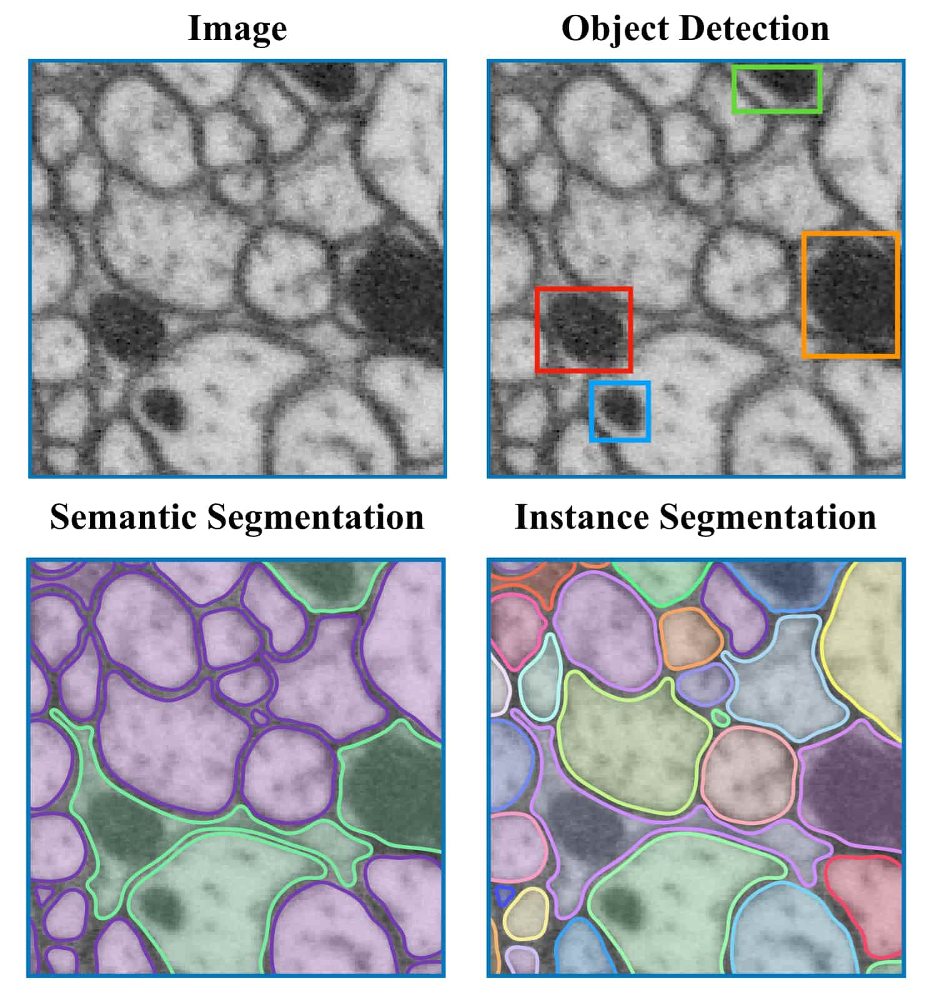

Automating the microscopic boundary detection of neurons to unlock the secrets of neural connectivity.
To understand brain disorders, we must map synapses. Manual tracing of a single cubic millimeter would take a human researcher hundreds of years. AI reduces this to hours.
Accurate segmentation allows for the quantification of neural morphology changes in neurodegenerative diseases, aiding early diagnosis of conditions like Alzheimer's.
Bridging the gap between biological microscopy and digital data. BioSeg-UNet serves as a critical pre-processing layer for large-scale neurological analysis.
U-Net's power lies in its Skip Connections. Unlike standard CNNs that lose spatial data during pooling, BioSeg-UNet passes high-resolution information directly from the encoder to the decoder.

By implementing this specific U-Net variant in PyTorch, we've demonstrated how deep learning can bypass the traditional bottlenecks of biomedical research, accelerating the path toward a complete human connectome.